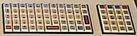
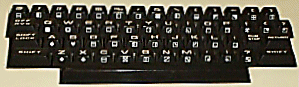
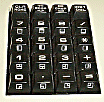
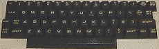
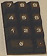
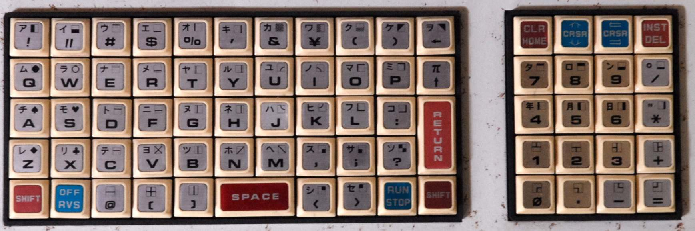
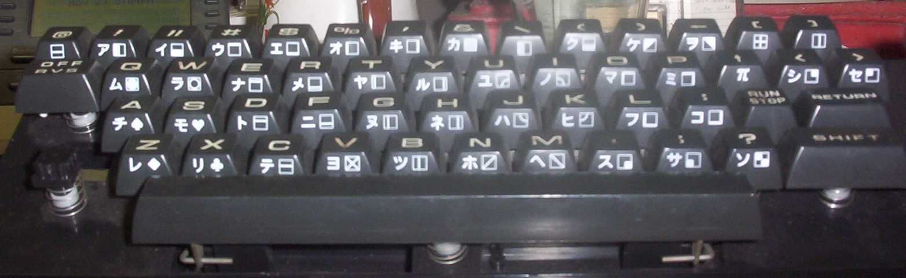
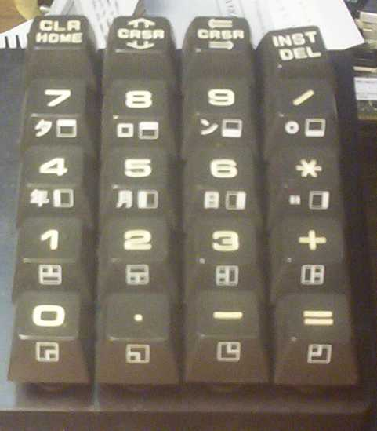
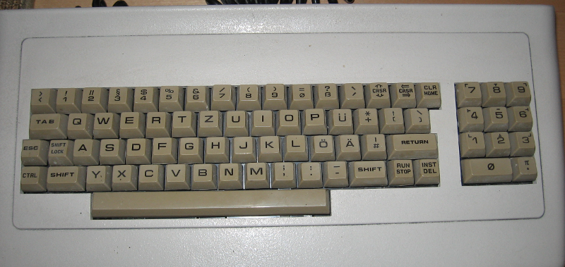

PET index - keyboards
(C) 1998-2010 André Fachat
The keyboard layout is sometimes a real hassle, because there are in fact quite some different keyboards. The very first one was the chicklet-type keyboard of the original PET. It actually represented the keyboard scan matrix quite nicely. The graphics keyboard is a direct descendant as it uses the same scan matrix.
The business keyboards however have differences. The first and most (if at all) known are the different so-called 50Hz and 60Hz models. Those numbers relate to the power supply line frequency in Europe and the USA resp. Because of this difference there were differences in the video controller, but Commodore also decided to have different keyboards. Later, however, in Europe and even Japan CBM sold nationalized CBM machines with german or other keyboards and character sets. Therefore I will in this document name the keyboards "chicklet", "graphics" and "business-**", where "**" is "us", "uk", "de" etc for the different countries.
I now have put my worksheet of the PET keyboard layout here. It
is a graphical representation of the PET graphics and business-uk
(50Hz) keyboards, with the keycaps and the row/column number
in the scan matrix. There is a postscript file for the
UK (50Hz) business keyboard
and the Graphics keyboard.
For those of you who would like to send me other mappings, please
use the unix xfig program and the templates in
petmaps.tar.gz.
(If displaying postscript, use A4 paper format, 29.7cm x 21cm).
There also is my old, hand-drawn version. Unfortunately it is not high-quality, but I hope it helps. It is in klayout.png (150k). You may also see if you can recognize the prints on these images (courtesy Bo Zimmermann):
{kind=link}
| Chicklet keyboard |  |
|  | Graphics keyboard |
| Business keyboard |  |
How is a keyboard read by the operating system? The CPU writes the keyboard row number into PIA1 PA 0-3, where the row number goes from 0 to 9. This is decoded into 10 select lines, each is set high unless the keyboard row matches with it, then it is set low. To each row line there are 8 keys attached that, if pressed, make contact with one of the 8 bits of PIA1 PB. Those inputs are read as high if no key is pressed (pullup resistors). Also if a key is pressed and the corresponding row select line is not low, the input is read high. But if a key is pressed and the row select line of that key is low, the corresponding PB bit is read 0, indicating that the key at the selected row and the position of the 0-bit is pressed. With 10 rows and 8 columns you get up to 80 keys. The keyboard scan matrix reflects this origanization.
The graphics keyboard
Graphics keyboard decoding table:
----+------------------------
row | 7 6 5 4 3 2 1 0
----+------------------------
9 | 3D 2E FF 03 3C 20 5B 12
| = . -- ^C < sp [ ^R ^C = STOP, ^R = Reverse on
|
8 | 2D 30 00 3E FF 5D 40 00
| - 0 rs > -- ] @ ls rs = right shift, ls = left shift
|
7 | 2B 32 FF 3F 2C 4E 56 58
| + 2 -- ? , n v x
|
6 | 33 31 0D 3B 4D 42 43 5A
| 3 1 ^M ; m b c z ^M = return
|
5 | 2A 35 FF 3A 4B 48 46 53
| * 5 -- : k h f s
|
4 | 36 34 FF 4C 4A 47 44 41
| 6 4 -- l j g d a
|
3 | 2F 38 FF 50 49 59 52 57
| / 8 -- p i y r w
|
2 | 39 37 5E 4F 55 54 45 51
| 9 7 ^ o u t e q
|
1 | 14 11 FF 29 5C 27 24 22
| ^T ^Q -- ) \ ' $ " ^T = DEL, ^Q = cursor down
|
0 | 1d 13 5F 28 26 25 23 21
| ^] ^S <- ( & % # ! ^] = cursor right, ^S = home
----+------------------------
The original gfx keyboard reflects the matrix perfectly:
! " # $ % ' & \ ( ) <- ^s ^q ^] ^t
q w e r t y u i o p ^ 7 8 9 /
a s d f g h j k l : ^m 4 5 6 *
z x c v b n m , ; ? ^m 1 2 3 +
LS ^r @ [ ] SPACE < > ^c RS 0 . - =
The shift key always set the high bit, producing a graphic character.
The business keyboard
This is the us and en keyboard scan matrix. The upper ones are the en (50Hz) and the lower ones, if they differ, the us (60Hz) codes.
The keyboard is scanned by writing the row number into the row select port
($E810), then reading the column bits ($E812). Each bit that reads 0
represents a pressed key.
; 00 = Shift
; 10 = Repeat
; 80 flags unshiftable key
; FF = No key
Business keyboard decoding table:
----+------------------------
row | 7 6 5 4 3 2 1 0
----+------------------------
9 | 16 04 3A 03 39 36 33 DF
| ^V -- : ^C 9 6 3 <- ^V = TAB + <- + DEL, ^C = STOP,
| <- = left arrow
8 | B1 2F 15 13 4D 20 58 12
| k1 / ^U ^S m sp x ^R k9 = keypad 9, ^U = RVS + A + L,
| ^S = HOME, sp = space, ^R = RVS
7 | B2 10 0F B0 2C 4E 56 5A ^O = Z + A + L, rp = repeat
| k2 rp ^O k0 , n v z
|
6 | B3 00 19 AE 2E 42 43 00
| k3 rs ^Y k. . b c ls ^Y = left shift + TAB + I, k. = keypad .
| ls = left shift, rs = right shift
5 | B4 DB 4F 11 55 54 45 51 ^Q = cursor down
| k4 [ o ^Q u t e q
| 5D]
4 | 14 50 49 DC 59 52 57 09
| ^T p i \ y r w ^I ^T = DEL, ^I = TAB
| C0@
3 | B6 C0 4C 0D 4A 47 44 41
| k6 @ l ^M j g d a ^M = return
| 5B[
2 | B5 3B 4B DD 48 46 53 9B
| k5 ; k ] h f s ^[ ^[ = ESC
| 5C\ 3B;
1 | B9 06 DE B7 B0 37 34 31
| k9 -- ^ k7 0 7 4 1
|
0 | 05 0E 1D B8 2D 38 35 32
| . ^N ^] k8 - 8 5 2 ^N = both shifts + 2, ^] = cursor right
----+------------------------
Hints
In Basic 4.0 CRTC the (PETSCII) values listed in the table below are recorded in location 151 [this makes distinguishing between the normal 0 key and the one on the numeric keypad impossible]; in older versions (and 4.0 without CRTC) the position in the table is recorded. The position is 8 * (9 - row) + (7 - column) + 1, i.e. starting at 1, incrementing left to right and top to bottom.
Control Codes
CONTROL CODES
=============
F: only on 4.0 fat-40, i.e. NOT on upgrade 4.0 roms.
8: only on 4.0 80 columns.
4B: only on 4.0 upgrade, B keyboard (maybe also on N keybd but I don't
have a ROM to verify this)
+------+------------------------------+------------------------------------+
|ctrl- | unshifted | shifted (unshifted + 128) |
+------+------------------------------+------------------------------------+
| C 3 | stop | load/run, dload"*/run, or dL"*/run |
| G 7 | bell | double bell |
| I 9 | tab (4B,F,8) | set/clear tab (4B,F,8) |
| M 13 | return | fake return |
| N 14 | text mode (F,8) | graphics mode (F,8) |
| O 15 | set top of window (8) | set bottom of window (8) |
| P 16 | erase end of line (F) | see note (no function) |
| Q 17 | cursor down | cursor up |
| R 18 | reverse field on | reverse field off |
| S 19 | cursor home | clear screen |
| T 20 | delete char left of cursor | insert space at cursor |
| U 21 | delete line (8) | insert line (8) |
| V 22 | erase end of line (8) | erase begin of line (F,8) |
| Y 25 | scroll up (8) | scroll down (8) |
| [ 26 | escape: end inst & quote mode| (no function) |
| ] 28 | cursor right | cursor left |
| | | 255 pi (converted to 94) |
+------+------------------------------+------------------------------------+
Note: on the 4.0-40-crtc version the code for "erase end of line" is
different from the 4.0-80 code. Note that the decimal notation of the
former (16, or $10) equals the hex notation of the latter ($16, or 22).
This suggests a typo while editing the assembly source for the other
version.
Larry Anderson wrote in a mail to cbm-hackers:
8032 control characters: Function CHR$ ESC/RVS Keyboard Combination* BELL 7 G [none] GRAPHICS 142 Shift N both SHIFTS + " TEXT 14 N [none] SCROLL DOWN 153 Shift Y Left SHIFT + TAB + I SCROLL UP 25 Y [none] SET BOTTOM 143 Shift O Shift Z + A + L SET TOP 15 O Z + A + L INSERT LINE 149 Shift U Shift RVS + A + L DELETE LINE 21 U RVS + A + L ERASE BEGIN 150 Shift V Shift TAB + <- + DEL ERASE END 22 V TAB + <- + DEL SET/CLR TAB 137 Shift I Shift TAB TAB 9 I TAB * Combination means press listed keys simultaneously for function. 8032 Window POKEs: Top - 224,(0-24) Bottom - 225,(Top-24) Left - 226,(0-79) Right - 213,(Left-79)
The PET was also sold in other countries. Here are some bits of information about those models:
Japan
The Japanese PET has a Yen symbol on the keyboard, and no pound symbol. But it also has some Japanese characters. Here are some pictures of the Japanese model (Courtesy MikeS):
| Japanese chicklet keyboard |  | |
| Japanese graphics keyboard |  |  |
| Japanese screen character ROM (PDF) |
{kind=link}
{kind=link}
{kind=link}
Germany
This CBM 8296 has the German umlauts.
| German business keyboard |  |
{kind=link}
Return to Homepage